Alternative Beam-Based Alignment techniques for the SIRIUS Storage Ring
Masters Qualification Exam
Vitor Davi de Souza
Prof. Dr. Tulio Costa Rizuti da Rocha
May 15, 2026
Contents
Introduction
SIRIUS
SIRIUS is the Brazilian 4th-generation synchrotron light source, operated by the Brazilian Synchrotron Light Laboratory (LNLS) at the Brazilian Center for Research in Energy and Materials (CNPEM) in Campinas, São Paulo.
| SIRIUS Storage Ring Parameters | ||
|---|---|---|
| Energy | 3 GeV | |
| Emittance (hor.) | 250 pm.rad | |
| Operation mode | Top-up | |
| Parameter | Currently | Phase II |
| Beam current | 200 mA | 350 mA |
| Lifetime | ≈ 17 h | ≈ 10 h |
| Number of beamlines | A | B |
Synchrotron Light Sources: Storage Rings
System
Motivation
- The SIRIUS's Storage Ring needs sub-micrometer orbit stability to maintain its performance
- The orbit stability depends on the precision and accuracy of the Beam Position Monitors (BPM)
- The BPMs have high precision (nanometer-level) but low accuracy
- So we calibrate the BPMs using the Beam-Based Alignment (BBA) procedure
The Problem
The current BBA procedure is very time-consuming (6∼8 hours for all 160 BPMs)
Objectives
- Study and validate alternative Beam-Based Alignment techniques for SIRIUS
Bibliographical Review
- Standard BBA
- Parallel BBA
- Fast AC BBA
- Others
Simulations
Explore BBA methods with the SIRIUS Storage Ring model
Implementation and Experiments
Implement and test at least one alternative BBA method
Theoretical Background
Coordinate System
We adopt a curvilinear coordinate system based on the Frenet-Serret frame, that follows a design orbit $\vec{r}_0(s)$
- $\hat{s}(s) = \dfrac{d}{ds}\vec{r}_0(s)$
- $\hat{x}(s) = -\rho(s)\dfrac{d}{ds}\hat{s}(s)$
- $\hat{y}(s) = \hat{s}(s) \times \hat{x}(s)$
For high energy particles ($v \rightarrow c$), their state is described in terms of small deviations from the design orbit
Magnetic Fields
In the Frenet-Serret frame, the transverse magnetic fields can be multipole-expanded around the design orbit
$B_y(x,y,s) + i B_x(x,y,s) = \sum \Big( B_n(s) + iA_n(s) \Big)(x+iy)^n$
Magnetic Fields
We normalize the field coefficients by the magnetic rigidity \(B\rho\), defining the magnetic lattice functions
$G(s) \equiv \dfrac{B_0(s)}{B\rho} = \dfrac{1}{\rho(s)}$
(Curvature function)
$K(s) \equiv \dfrac{B_1(s)}{B\rho}$
(Focusing function)
$K_S(s) \equiv \dfrac{A_1(s)}{B\rho}$
(Skew quad. strength)
Transverse Dynamics
From the Hamiltonian formalism, we derive the equations of motion
$$\left\{ \begin{array}{l} x'' = -\dfrac{(1 + Gx)^2}{1 + \delta}\dfrac{B_y}{B\rho} + G(1 + Gx) \\ y'' = +\dfrac{(1 + Gx)^2}{1 + \delta}\dfrac{B_x}{B\rho} \end{array} \right.$$
where $\delta = \frac{p - p_0}{p_0} \approx \frac{E - E_0}{E_0}$
In the linear approximation:
$$\Biggl\{ \begin{array}{l} x'' = -\left(K + G^2\right)x + G\delta + K_S y \\ y'' = + K y + K_S x \end{array} \Biggr.$$
Betatron Motion
For on-energy particles, the equations of motion reduce to the Hill's equation
$$u'' = -K_u u$$
where $u = x, y$, $\ K_x = K + G^2$ and $\ K_y = -K.$
The solution gives $$u(s)= a\sqrt{\beta_u(s)} \cos\!\left(\phi_u(s)-\phi_0\right)$$
which we call the betatron oscillations
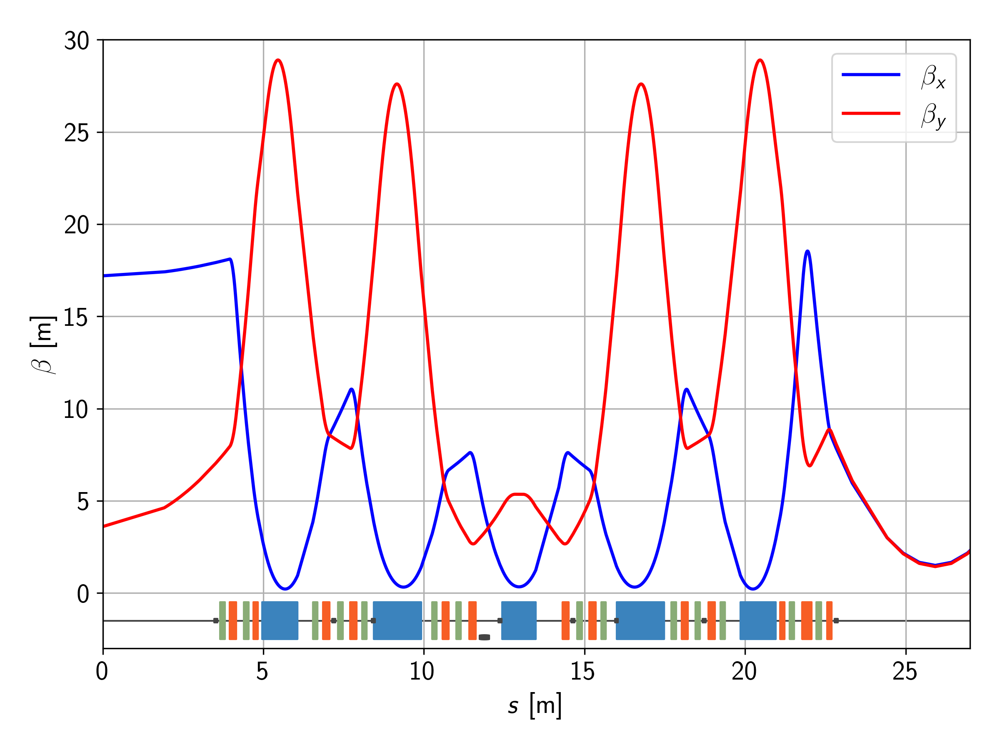
Betatron Motion
$$u(s) = a\sqrt{\beta_u(s)} \cos\!\left(\phi_u(s)-\phi_0\right)$$
The betatron functions satisfy $$\dfrac{1}{2}\beta'' + K(s)\beta = \dfrac{1}{\beta}\left[1 + \left(\dfrac{\beta'}{2}\right)^2\right] \qquad \Biggl\{\begin{array}{rcl} \beta(s) &=& \beta(s+L) \\ \beta'(s) &=& \beta'(s + L)\end{array}\Bigg.$$
and we define the phase-advance and tune $$\phi_u(s) = \int\limits_0^s \dfrac{1}{\beta_u(s')} ds' \qquad \nu_u(s) = \dfrac{1}{2\pi}\int\limits_s^{s+L} \dfrac{1}{\beta_u(s')} ds'$$
Dispersion
For off-energy particles, the horizontal motion depends on a particular solution
$$ x'' = -(K + G^2) x + G\delta$$
→ we choose $x_\delta(s) = \eta(s)\delta$
The solution describes an off-energy orbit associated to the dispersion function $\eta$, which satisfies $$\eta'' = -\left(K+G^2\right)\eta + G \qquad \Biggl\{\begin{array}{rcl} \eta(s) &=& \eta(s+L) \\ \eta'(s) &=& \eta'(s + L)\end{array}\Bigg.$$

Closed Orbit
In an ideal machine the closed orbit is the design orbit, in which particles travel around
→ However, dipolar field imperfections ($\delta G$) distort the closed orbit
$$u_{co}(s) = \dfrac{\sqrt{\beta_u(s)}}{2\sin{\pi\nu}}\int\limits_s^{s+L} \delta G_u(s')\sqrt{\beta_u(s')}\cos{\left(|\phi_u(s) - \phi_u(s')| - \pi\nu_u\right)}\Delta s'$$
To ensure the accelerator performs as designed, is essential to control and correct the closed orbit
Orbit Feedback-System
In the SIRIUS Storage Ring, we have a combination of sensors, actuators and algorithms to control the orbit
- Beam Position Monitors
- Corrector Magnets
- FOFB and SOFB
Orbit Feedback-System: Beam Position Monitors
• 160 BPMs to read the transverse beam position
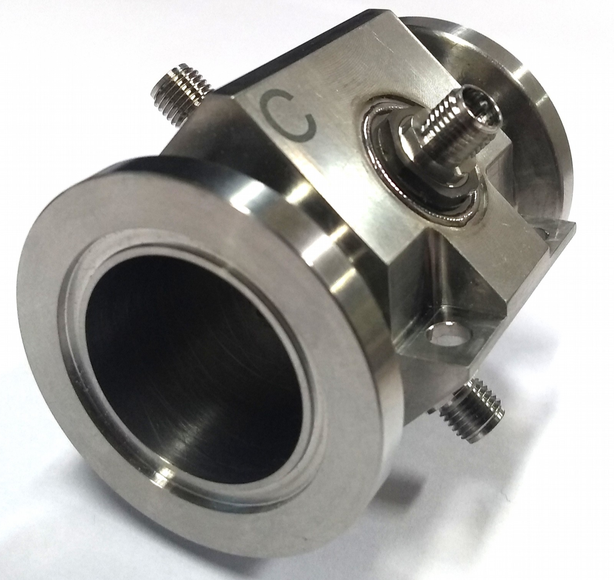
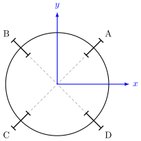
Two pair of antennas that convert current signal into transverse beam position
$$x = \zeta\left(\dfrac{A - C}{A + C} - \dfrac{B - D}{B + D}\right)$$
$$y = \zeta\left(\dfrac{B - D}{B + D} + \dfrac{A - C}{A + C}\right)$$
where $\zeta = 8.5$ mm is a calibration factor
→ Resolution: $\approx$2 nm
Orbit Feedback-System: Correctors

- 120 CH (slow horizontal correctors)
- 160 CV (slow vertical correctors)
- 80 FCH (fast horizontal correctors)
- 80 FCV (fast vertical correctors)
Orbit Feedback-System: Orbit Correction
As dipolar field imperfections, localized dipolar kicks also change the closed orbit $$\Delta u(s_i) = \dfrac{\sqrt{\beta_u(s_i)}}{2\sin{\pi\nu_u}}\sum \Delta\theta_j\sqrt{\beta_u(s_j)}\cos{\left(|\phi_u(s_i) - \phi_u(s_j)| - \pi\nu_u\right)} $$
$\Delta\vec{u} = \mathbf{M}\Delta\vec{\theta}$
where
$\vec{u} = ( x_1, \dots , x_{\text{\small N}_\text{BPM}}, y_1, \dots , y_{\text{\small N}_\text{BPM}} )$
$\vec{\theta} = ( \theta_{1}^x, \dots ,\theta_{\text{\small N}_\text{CH}}^x, \theta_{1}^y, \dots ,\theta_{\text{\small N}_\text{CV}}^y )$
and $\mathbf{M}$ is the Orbit Response Matrix
Orbit Feedback-System: Orbit Correction
$$\Delta\vec{u} = \mathbf{M}\Delta\vec{\theta}$$
Lets say we read an orbit distortion $\vec{u}_0$ on the machine, we need $\vec{u}_0 + \Delta \vec{u} = 0$
→ $\vec{u}_0 + \mathbf{M}\Delta\vec{\theta} = 0$
→ $\Delta \vec{\theta} = -\mathbf{M}^{-1}\vec{u}_0$
giving us the necessary kicks $\Delta\vec{\theta}$ to correct the distortion
Orbit Feedback System: SOFB and FOFB
SOFB
- Slow Orbit FeedBack
- @ 10 Hz
- 160 BPMs
- 120 CH + 160 CV + 1 RF
-
Compensates slow drifts
- Thermal effects
- Ground and lunar motion
- Residual misalignments
FOFB
- Fast Orbit FeedBack
- @ 48 kHz
- 80 BPMs
- 80 FCH + 80 FCV
-
Compensates disturbances from
0.1 Hz to 1 kHz- Booster interference (2 Hz)
- Electric-? ressonance (60 Hz)
- Motion of Insertion Devices
Orbit Feedback System: the accuracy problem
The electric center of BPMs does not necessarily match the design orbit
Natural imperfections and misalignments also make the BPMs inaccurate
→ To solve this, we use Beam-Based Alignment techniques
to calibrate the BPMs
Beam-Based Alignment
The BBA Principle
The calibration of BPMs consists of finding the offsets that indicate whether the beam travels on an "ideal" orbit defined by the magnetic centers of the magnets on the accelerator
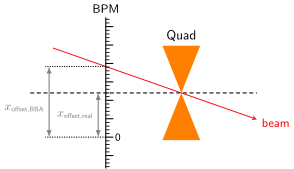
The BBA Principle
From the EOM, we know that a beam passing off-center on a quadrupole will experience a kick and disturb the orbit
$$\Delta x' = -KL\, x$$
This makes quadrupoles the most suitable magnets for BBA, since the orbit distortion, beam position and quadrupole strength are linearly related
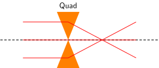
The BBA Principle
The distance between a BPM and a quadrupole is crucial for determining the offset accurately
- farther the BPM → higher the difference between $x_\text{offset, BBA}$ and $x_\text{offset, real}$
- closer the BPM → $x_\text{offset, BBA} \approx x_\text{offset, real}$
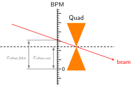
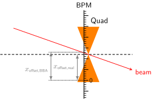
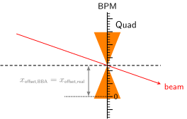
The BBA Principle
For a BPM-Quad pair close enough $$x_\text{quad} \approx (x_\text{bpm} - x_\text{offset, real}) \approx (x_\text{bpm} - x_\text{offset, BBA})$$
This way $$\Delta x' \approx -KL\, (x - x_\text{offset})$$
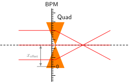
From this we determine the offset by varying the beam position and the quadrupole strength
→ If the orbit does not change when varying $K$, then $x = x_\text{offset}$
Standard BBA
The standard BBA method emerged in the 80s and was widely discussed in the 90s with seminal works
- R. Schmidt, "Misalignments from K-modulation" (CERN SL/93-19, 1993)
- P. Röjsel, "A Beam Position Measurement System Using Quadrupole Magnets Magnetic Centra as the Position Reference" (NIM, A 343, 1994)
- Barnett et al., "Dynamic Beam Based Alignment" (AIP 333, 1995)
The method empirically applies the BBA principle by modulating the strength of quadrupoles and scanning the orbit on the BPMs to find the offsets
→ In the SIRIUS Storage Ring, the method was studied and implemented in 2019–2020 (commissioning)
Standard BBA
The standard BBA procedure consists of:
- $\rightarrow$ Scan the transverse plane on a BPM: $\mathbf{r}_{i} = (x_i, y_i)$
- $\qquad\rightarrow$ For each $\mathbf{r}_i$, vary the quadrupole strength: $K^\pm = K_0 \pm \Delta K$
- $\qquad\qquad\rightarrow$ For each $K^\pm$, collect the orbit on all BPMs: $\vec{u}^\pm_i$
- $\qquad\qquad\qquad\rightarrow$ Calculate the orbit distortion: $\Delta \vec{u}_i = \frac{1}{2}(\vec{u}^+_i - \vec{u}^-_i)$
- $\rightarrow$ Fit $\Delta\vec{u}_i = \vec{a}\, \mathbf{r}_i + \vec{b}$ or $\chi_i^2 = a\, \mathbf{r}_i^2 +b\, \mathbf{r}_i + c$ where $\chi^2_i = \dfrac{1}{N_\text{\small BPMs}}\sum\limits_{j=0}^{N_\text{\small BPMs}} (\Delta u_{i,j})^2$
- $\rightarrow$ Solve for $\Delta\vec{u} = 0$: $\mathbf{r}_\text{offset} = \left\langle\dfrac{-\vec{b}}{\vec{a}}\right\rangle$ or $\dfrac{\partial\chi^2}{\partial\mathbf{r}} = 0$: $\mathbf{r}_\text{offset} = \left(\dfrac{-b}{2a}\right)$
Standard BBA
Typical standard BBA results for a single BPM are observed in the following plots
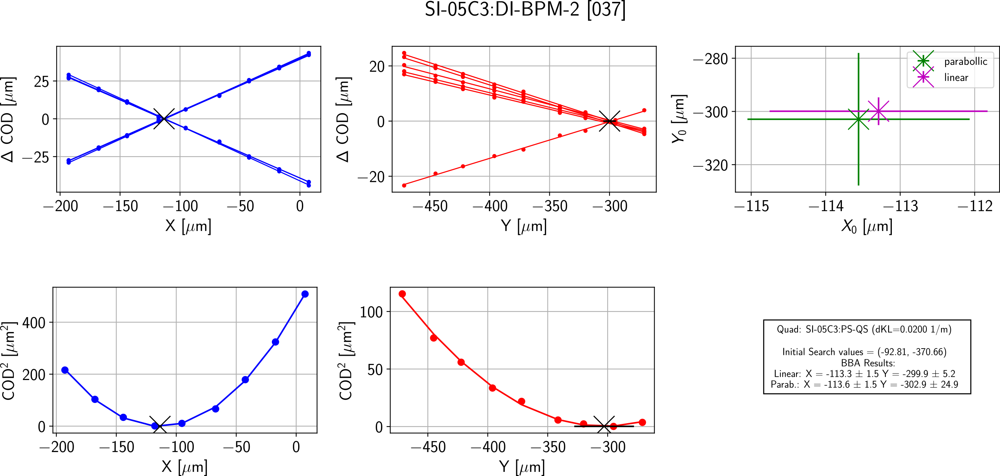
Standard BBA
In SIRIUS:
- 160 BPMs
- orbit shifts on both planes ($x$, $y$) simultaneously
- 8 orbit shifts per BPM (±25μm, ±50μm, ±75μm, ±100μm)
- approximately 2∼3 min per BPM
- 6∼8 hours for a full BBA procedure
Parallel BBA
The Parallel Beam Beam Alignment (PBBA) was proposed by Xiaobiao Huang in 2022
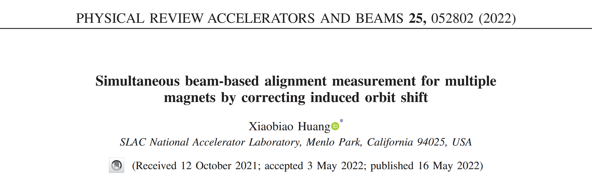
Since then, it has been simulated and tested on accelerators such as
- LCLS-II (USA, SLAC, 2022)
- SPEAR3 (USA, SLAC, 2022)
- FCC-ee (Switzerland, CERN, 2023/2024)
- KARA (Germany, KIT, 2024/2025)
- NSLS-II (USA, BNL, 2024)
Parallel BBA
• The central idea is to minimize the Induced Orbit Shift (IOS)
→ Our goal is to find an orbit that satisfies: $$\vec{u}(\vec{\theta}, \vec{K}_0) = \vec{u}(\vec{\theta}, \vec{K}^\pm)$$
→ The IOS is defined as: $$\vec{\xi} = \frac{1}{2}\left(\vec{u}(\vec{\theta}, \vec{K}^+) - \vec{u}(\vec{\theta}, \vec{K}^-)\right)$$
→ Minimizing the IOS results in: $$\vec{\xi} = 0 \Leftrightarrow \vec{u}(\vec{\theta}, \vec{K}^+) = \vec{u}(\vec{\theta}, \vec{K}^-) \Leftrightarrow \vec{u}(\vec{\theta}, \vec{K}_0) = \vec{u}(\vec{\theta}, \vec{K}^\pm)$$
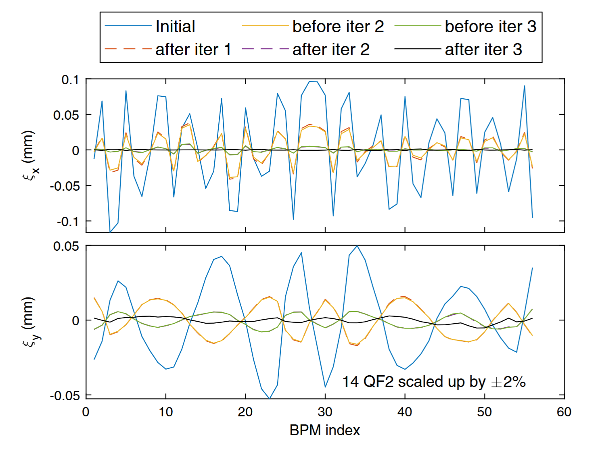
Parallel BBA
→ Linearizing $\vec{\xi}$ around an initial kick configuration $\vec{\theta}_0$ gives: $$\vec{\xi}\ \ =\ \ \vec{\xi}(\vec{\theta_0}) + \dfrac{\partial \vec{\xi}}{\partial \vec{\theta}}(\vec{\theta} - \vec{\theta_0}) \ \ =\ \ \vec{\xi}_0 + \mathbf{R}\Delta\vec{\theta}$$
where $\mathbf{R}_{ij} = \partial \vec{\xi}_i/\partial \vec{\theta}_j$ is the IOS Response Matrix
→ Solving for $\vec{\xi} = 0$ we get: $$\Delta\vec{\theta} = -\mathbf{R}^{-1}\vec{\xi}_0$$
$\vec{\theta} = \vec{\theta_0} + \Delta\vec{\theta} \quad\Rightarrow\quad \vec{u}_\text{offset} = \vec{u}(\vec{\theta}, \vec{K}_0) = \vec{u}(\vec{\theta}, \vec{K}^\pm)$
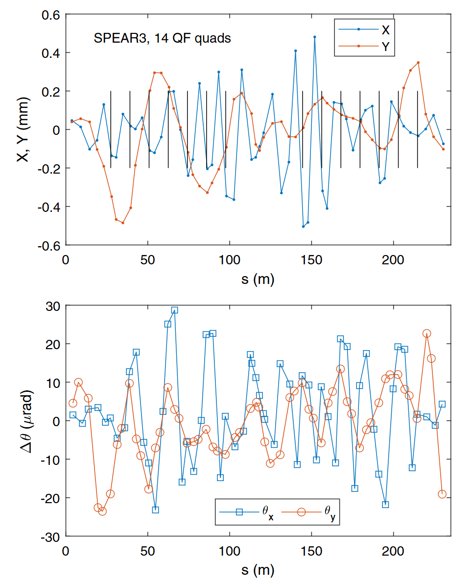
Parallel BBA
The Parallel BBA procedure consists of:
- $\rightarrow$ Separate all BPM-Quad pairs into groups
- $\rightarrow$ Define $\vec{K}^+$ and $\vec{K}^-$ for each group
- $\rightarrow$ Get the IOS Response Matrix $\mathbf{R}$ for each group
- $\rightarrow$ For each group, do:
- $\qquad\rightarrow$ Loop while $\vec{\xi} \neq 0$
- $\qquad\qquad\rightarrow$ Measure the IOS: $\vec{\xi} = \frac{1}{2}\left(\vec{u}(\vec{\theta}, K^+) - \vec{u}(\vec{\theta}, K^-)\right)$
- $\qquad\qquad\rightarrow$ Compute the delta kicks ($\Delta\vec{\theta} = -\mathbf{R}^{-1}\vec{\xi})$ and apply ($\vec{\theta} = \vec{\theta} + \Delta\vec{\theta}$)
- $\qquad\rightarrow$ Read and save the offsets: $\vec{u}_\text{offset} = \vec{u}(\vec{\theta}, \vec{K}_0) = \vec{u}(\vec{\theta}, \vec{K}^\pm)$
Fast BBA AC
The Fast Beam Beam Alignment with AC excitations (FBBA-AC) was proposed by Zeus Martí (et al.) in 2020
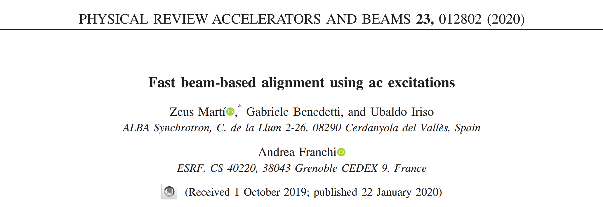
Since then, it has been simulated and tested on accelerators such as
- ALBA (Spain, CELLS, 2020)
- Diamond (UK, DLS, 2023-2024)
- HEPS (China, IHEP, 2023)
- HALF (China, NSRL, 2025)
Fast BBA AC
The Fast BBA AC is a robust improvement of the standard BBA
→ Instead of discrete orbit shifts, AC excitations on the correctors are used to induce the orbit distortions.
→ High acquisition rate BPMs are used to collect the orbit data
→ The linear relationship between orbit distortions and quadrupole modulation is extracted with harmonic analysis to obtain the BPMs offsets
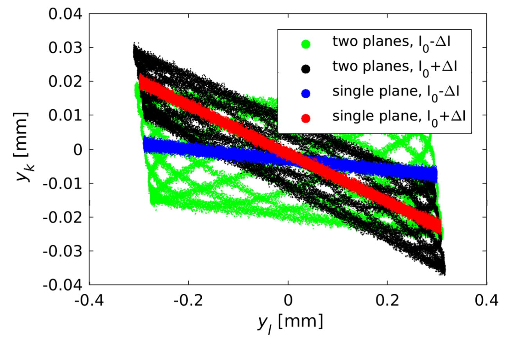
Fast BBA AC
The FBBA-AC procedure consists of:
- $\rightarrow$ For each BPM-Quad pair:
- $\qquad\rightarrow$ For each quadrupole strength $K^-$ and $K^+$:
- $\qquad\qquad\rightarrow$ Apply sinusoidal AC excitations to suitable CH and/or CV
- $\qquad\qquad\rightarrow$ Acquire fast BPM data during the excitation
- $\qquad\rightarrow$ Correlate the orbit distortions to calculate the BPM offsets
Preliminary Results
Parallel BBA: Simulations
→ First steps: divide BPM-Quad pairs into groups
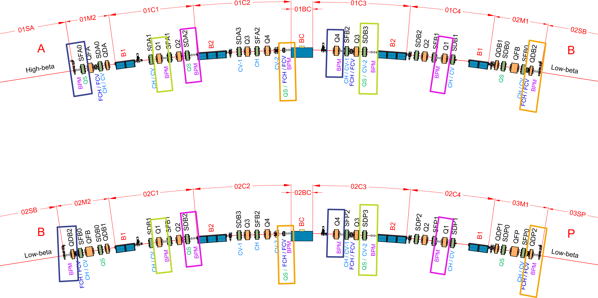
Q4, QDB2, QDP2, QS @ (M2, C3) Q1, QS @ (C1, C3) QS, Q1 @ (C1, C4) QS, QDB2, QDP2 @ (M1, C2)Parallel BBA: Simulations
→ Analyze the impact of measuring the IOS
Tunes and coupling variation during IOS measurement
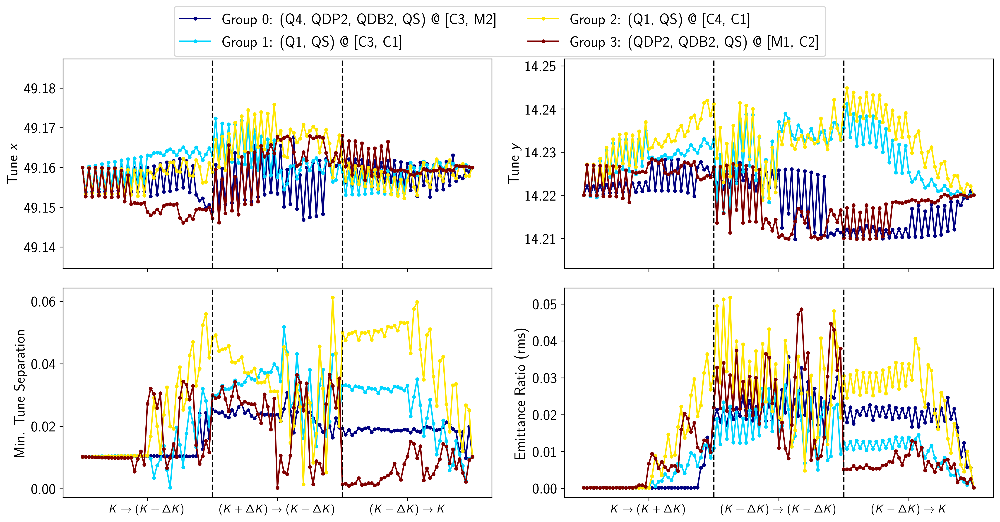
Parallel BBA: Simulations
→ Simulate a PBBA run on the SIRIUS Storage Ring model
PBBA: Group 0 (Q4, QDB2, QDP2, QS @ [M2, C3])
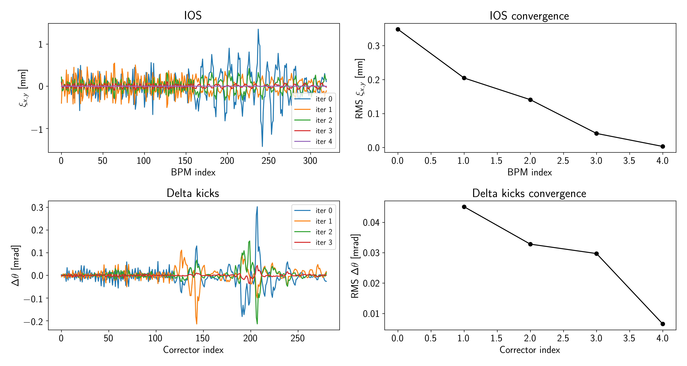
Parallel BBA: Experiments
- Oct 13, 2025 — First experiments (Groups 0 & 1 and a group of selected BPMs)
- Dec 8, 2025 — First full PBBA runs
- Jan 5, 2026 — Parallel BBA vs Standard BBA
- Jan 12 and Feb 9, 2026 — Groups rearrangement and convegence analysis
Parallel BBA: Experiments
• October 13, 2025
PBBA and Standard BBA for a group of 4 selected BPMs
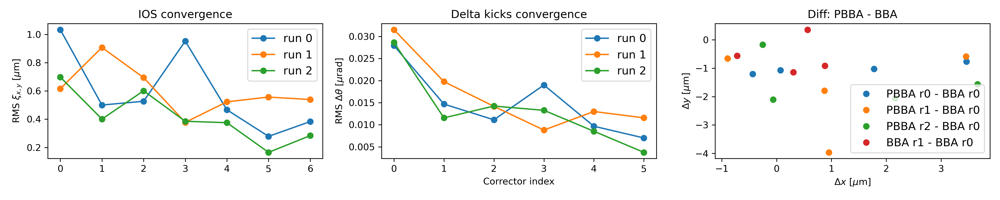
PBBA for the "default" group 0
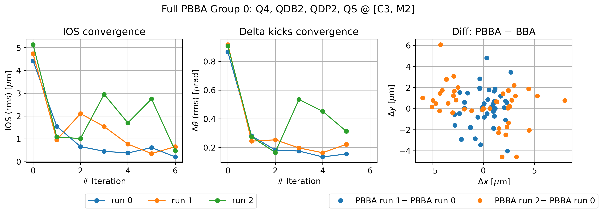
• The Standard BBA runs for the group of 4 selected BPMs took ∼8 minutes (≈ 2min/BPM)
• Each PBBA run for both groups took ∼1 minute → does not scale with the number of BPMs
• For the group of 4 selected BPMs, the results between the Standard BBA and PBBA differ by ±2μm
• For the "default" group 0: the results of each PBBA run differ by ±6μm
Parallel BBA: Experiments
• December 8, 2025: Full PBBA (all "default" groups)
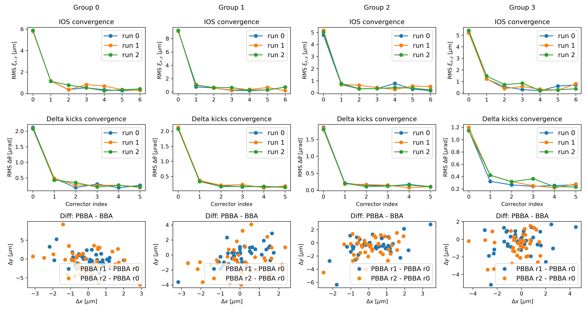
• Each full PBBA run took ≈ 4min (1 min/group)
• For all groups, the differences between each PBBA run are smaller then ±8μm
Parallel BBA: Experiments
• January 5, 2025: Full PBBA before and after a full Standard BBA
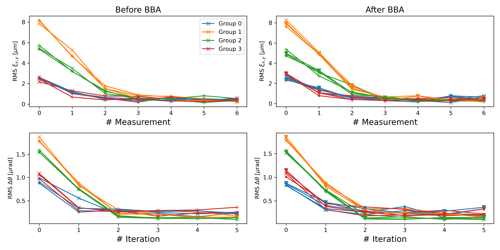
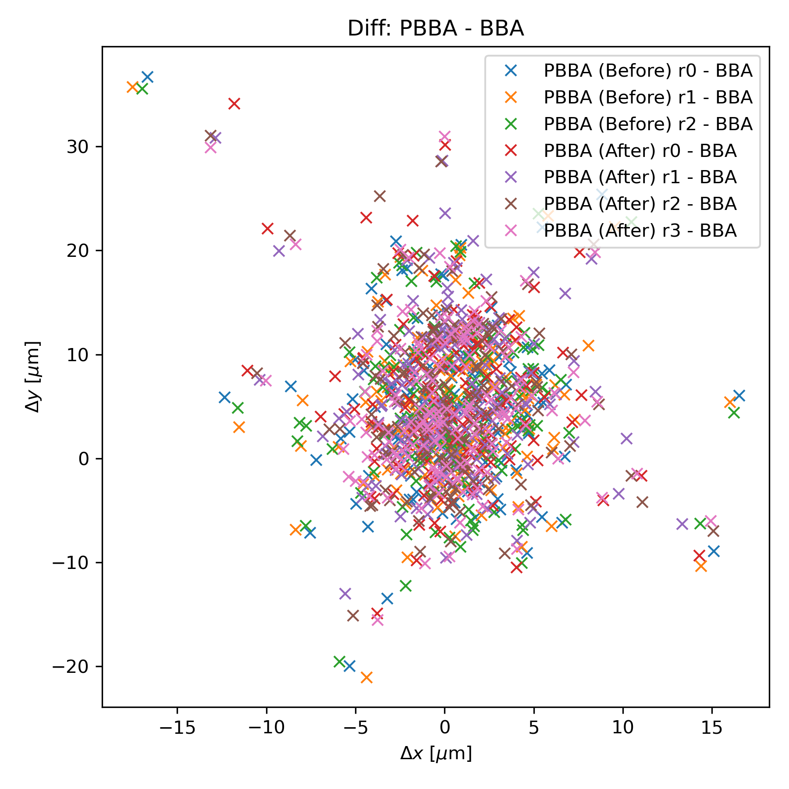
• The differences between the results of Standard BBA and PBBA are smaller then ±30μm
with $\sigma_x$ = ±3.46μm and $\sigma_y$ = ±6.78μm
Parallel BBA: Experiments
• January 12 and February 9, 2026
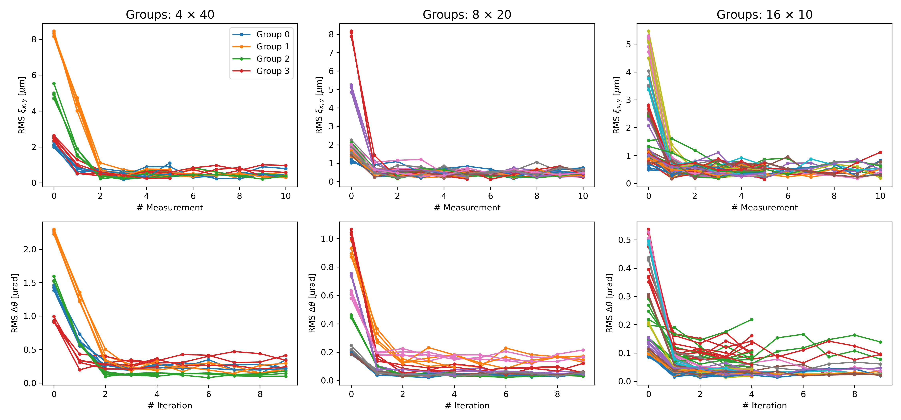
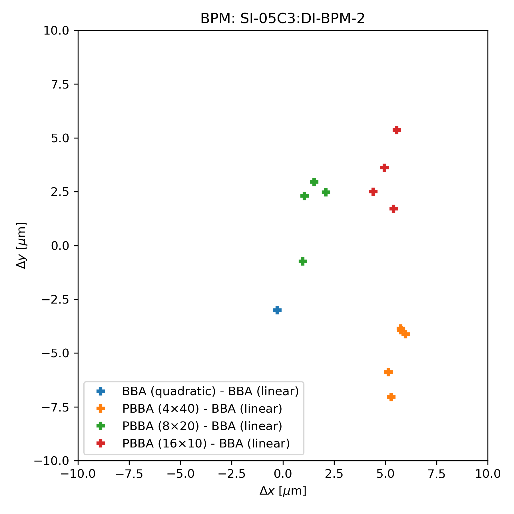
• For all the configuration of groups, the convegence is achieved in 3∼4 iterations
→ which reduces the run execution time by 33%∼50%
• The configuration of 8 groups is the most stable: kicks converge and stay still
• For a single BPM, the differences between the Standard BBA and PBBA runs are:
Groups 4x40: ($x$) ±6μm and ($y$) ±7μm
Groups 8x20: ($x$) ±2.5μm and ($y$) ±4μm
Groups 16x10: ($x$) ±5μm and ($y$) ±7μm
• The Standard BBA results from the linear and quadratic fits differ by ($x$) ±0.5μm and ($y$) ±3μm
Parallel BBA: Partial Conclusion
Until now PBBA has shown:
- High speed — the execution time is 45∼90 times faster (6 hours to 4∼8 minutes)
- Accuracy — comparisons with Standard BBA show differences of a few microns
- Repeatability — PBBA runs under the same configuration differ by a few microns
Closing and Next Steps
So far, the following activities have been developed:
- Study of accelerator physics, beam dynamics, beam-based alignment
- Implementation and experiments of Parallel BBA on the SIRIUS Storage Ring
- A contribution work to be presented at the IPAC'26 (International Particle Accelerator Conference)
- Courses: FI001, FI195, FI189 (and FI008 to be concluded this semester)
Next steps
- Continue PBBA experiments to improve and polish the implementation
- Study the FBBA-AC method in greater depth
- Implement and test FBBA-AC at SIRIUS
- Compare the overall performance of the different methods
- Bibliographical survey of additional methods